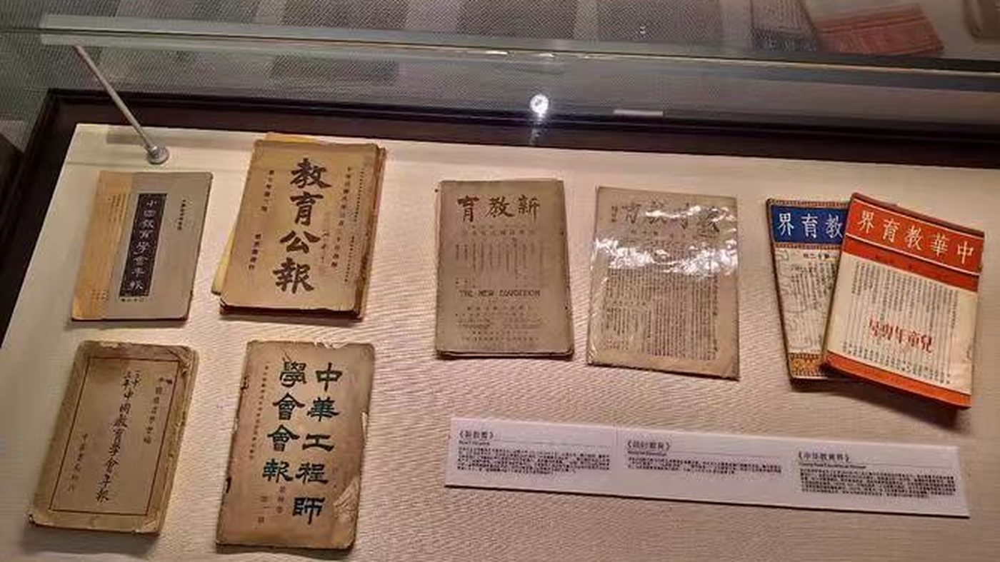

第 2 记 · 一张布告
“婆姨女子脚放开，长头发剪成短毛盖。男当红军女宣传，革命的势力大无边。”妇女委员长张景文教唱的歌曲（民主协商报，2025-05-23）
1934 年 11 月 7 日，陕甘边区苏维埃政府在荔园堡成立。摆在它面前的，是一个鸦片泛滥、缠足成习、文盲遍地的山区。
荔园堡：1934 年 11 月 7 日
1934 年 11 月 7 日，陕甘边区苏维埃成立庆祝大会在荔园堡古城内举行。古城修筑于北宋治平年间（公元 1064—1067 年），城名由宋英宗钦赐。
苏维埃政府主席习仲勋，副主席白天章；政府下设土地、劳动、财政、粮食、军事、肃反等委员会。到 1935 年初，根据地东至宜川、西到定边、南接耀县、北迄靖边，纵横数百里。
“十大政策”，条条对着具体问题
苏维埃政府制定并实施了著名的“十大政策”：土地政策、财政粮食政策、军事政策、统一战线政策、民政劳资政策、文化教育政策、知识分子政策、肃反政策、廉政政策、各项社会政策。
这些政策要解决的，是粮食、财政、兵员、治安这些具体问题：打土豪、分田地，发展生产，组织合作社，保障军需，也保障老百姓过日子。
三个委员会与“六劝”
针对社会积弊，政府专门设立禁烟委员会、禁赌委员会、放脚委员会，颁布禁烟、禁赌、放脚条例，反对封建买卖婚姻，反对封建迷信活动，并确定专人负责。
以“劝破除迷信、劝戒赌博、劝戒鸦片烟、劝禁买卖婚姻、劝妇女放脚、劝男子剪辫子”为内容的“六劝”活动在苏区普遍兴起。南梁一带原本适宜种鸦片，地主豪绅和军阀土匪强迫农户种植，禁烟因此不只是风气问题，也是经济问题。
妇女委员长唱的歌
政府设立妇女委员会，倡导男女平等，动员妇女走出家门参加生产和社会活动：组织妇女掩护、收容政府干部和红军伤病员，为红军传递情报，赶制军衣、军鞋、军旗，洗衣、碾米、磨面。
妇女委员长张景文教妇女唱：“婆姨女子脚放开，长头发剪成短毛盖。男当红军女宣传，革命的势力大无边。”她还带领妇女参与打土豪、分田地。
对俘虏，不简单杀掉
政府对俘虏采取教育争取、改造使用的政策：多做工作，耐心帮助教育，争取团结多数；对坚决反对改造、破坏改造的反革命分子与特务，则予以打击。
小石崖民团团总罗连城同情并靠近红军，多次支持刘志丹枪支钱物，那里后来成了红军游击队的联络站和伤兵寄养地；1935 年 6 月红军攻下李家塌民团寨子，刘志丹亲自审讯被俘的反动团总和恶霸，枪毙了反动团总唐海燕，对一般团丁则宣传政策、发给路费、释放回家。
没有法院，但有程序
边区政府当时还没有设立正式的人民法院，但对违法及民事纠纷等一切案件，都经过边区各级政府、按一定组织程序处理，并广泛听取群众意见，维护贫苦农民和当事者的合法权益。
群众有了不舒心的事和矛盾纠纷就找政府，政府处理得让群众心情舒畅——这大概是一个新政权最朴素的政治合法性。

布告与条例
禁烟、禁赌、放脚条例逐条张贴到村
三个委员会
禁烟、禁赌、放脚，各设专人负责
土地与粮食
打土豪、分田地，发展生产，保障军需
识字班
妇女委员长张景文教妇女唱歌识字
本页史实清单
- 1934 年 11 月 7 日，陕甘边区苏维埃政府在荔园堡成立，习仲勋任主席、白天章任副主席
- “十大政策”：土地、财政粮食、军事、统一战线、民政劳资、文化教育、知识分子、肃反、廉政、各项社会政策
- 设禁烟、禁赌、放脚三个委员会，推行“六劝”
- 妇女委员会组织做军衣军鞋、传递情报、掩护伤员
- 对俘虏教育争取、改造使用；罗连城支援红军，唐海燕被处决
- 无正式法院，案件按组织程序处理并听取群众意见
资料来源：民主协商报《陕甘边区苏维埃政府的各种社会政策》（2025-05-23）；华池县人民政府《红色南梁邀您来打卡！》（2023-05-05）